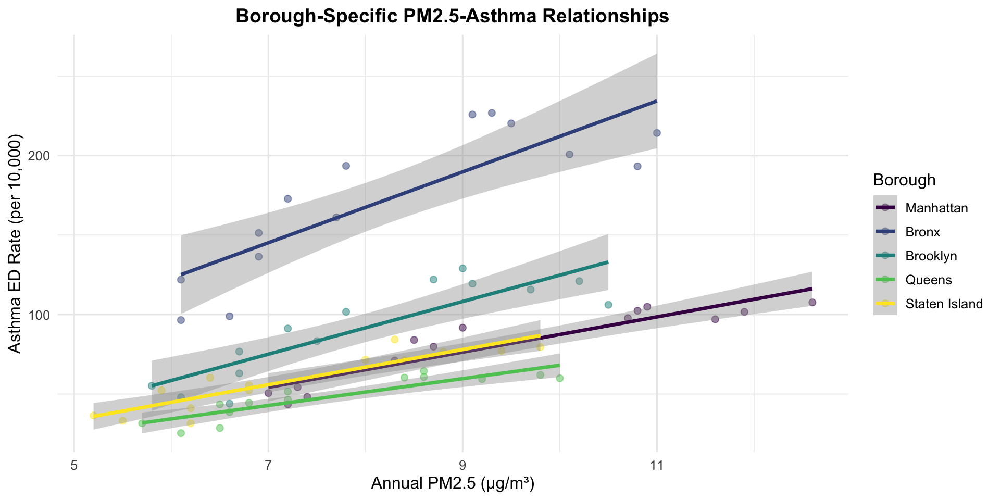

Statistical Modeling
PM2.5 and Asthma Association Analysis
Overview
This analysis examines the statistical relationship between PM2.5 levels and asthma emergency department (ED) visit rates across NYC boroughs from 2009 to 2023. We employ multiple regression approaches to evaluate associations, test assumptions, and explore borough-specific patterns.
Data Summary
summary_stats <- tibble(
Metric = c("Time Period", "Observations", "Mean PM2.5 (μg/m³)",
"Mean Asthma Rate", "PM2.5 Range", "Asthma Rate Range"),
Value = c(
paste(min(merged$year), "-", max(merged$year)),
as.character(nrow(merged)),
as.character(round(mean(merged$pm25_annual, na.rm = TRUE), 2)),
as.character(round(mean(merged$asthma_rate, na.rm = TRUE), 1)),
paste(round(min(merged$pm25_annual, na.rm = TRUE), 1), "-",
round(max(merged$pm25_annual, na.rm = TRUE), 1), "μg/m³"),
paste(round(min(merged$asthma_rate, na.rm = TRUE), 1), "-",
round(max(merged$asthma_rate, na.rm = TRUE), 1), "per 10,000")
)
)
kable(summary_stats, align = c("l", "l"))| Metric | Value |
|---|---|
| Time Period | 2009 - 2023 |
| Observations | 70 |
| Mean PM2.5 (μg/m³) | 8.11 |
| Mean Asthma Rate | 90.3 |
| PM2.5 Range | 5.2 - 12.6 μg/m³ |
| Asthma Rate Range | 25.4 - 226.8 per 10,000 |
Exploratory Analysis
PM2.5 vs Asthma
plot_ly(merged, x = ~pm25_annual, y = ~asthma_rate, color = ~borough,
type = 'scatter', mode = 'markers',
colors = viridis(5),
marker = list(size = 8, opacity = 0.6),
text = ~paste('Year:', year, '<br>Borough:', borough,
'<br>PM2.5:', round(pm25_annual, 1),
'<br>Asthma Rate:', round(asthma_rate, 1)),
hoverinfo = 'text') %>%
add_trace(type = 'scatter', mode = 'lines',
line = list(dash = 'dash', width = 2),
showlegend = FALSE) %>%
layout(
title = list(text = "<b>PM2.5 vs Asthma ED Visit Rates</b>", font = list(size = 16)),
xaxis = list(title = "Annual PM2.5 (μg/m³)", titlefont = list(size = 13)),
yaxis = list(title = "Asthma Rate (per 10,000)", titlefont = list(size = 13)),
legend = list(title = list(text = '<b>Borough</b>'), font = list(size = 10)),
margin = list(l = 60, r = 100, t = 60, b = 50)
)Pattern: Positive relationship between PM2.5 and asthma rates across all boroughs, with the Bronx showing consistently elevated asthma rates.
Temporal Trends
PM2.5 Over Time
plot_ly(merged, x = ~year, y = ~pm25_annual, color = ~borough,
type = 'scatter', mode = 'lines+markers',
colors = viridis(5),
line = list(width = 2),
marker = list(size = 5)) %>%
layout(
title = list(text = "<b>PM2.5 Concentrations Over Time</b>", font = list(size = 15)),
xaxis = list(title = "Year", titlefont = list(size = 12)),
yaxis = list(title = "PM2.5 (μg/m³)", titlefont = list(size = 12)),
legend = list(title = list(text = '<b>Borough</b>'), font = list(size = 10)),
margin = list(l = 60, r = 100, t = 50, b = 40)
)Asthma Rates Over Time
plot_ly(merged, x = ~year, y = ~asthma_rate, color = ~borough,
type = 'scatter', mode = 'lines+markers',
colors = viridis(5, option = "plasma"),
line = list(width = 2),
marker = list(size = 5)) %>%
layout(
title = list(text = "<b>Asthma ED Visit Rates Over Time</b>", font = list(size = 15)),
xaxis = list(title = "Year", titlefont = list(size = 12)),
yaxis = list(title = "Asthma Rate (per 10,000)", titlefont = list(size = 12)),
legend = list(title = list(text = '<b>Borough</b>'), font = list(size = 10)),
margin = list(l = 60, r = 100, t = 50, b = 40)
)Seasonal Patterns
season_data <- merged %>%
pivot_longer(
cols = c(pm25_summer, pm25_winter),
names_to = "season",
values_to = "pm25"
) %>%
mutate(
season = ifelse(season == "pm25_summer", "Summer", "Winter")
)
ggplot(season_data, aes(x = borough, y = pm25, fill = season)) +
geom_boxplot(alpha = 0.7, outlier.shape = 21, outlier.size = 1.5) +
scale_fill_manual(values = c("Summer" = "#fbbf24", "Winter" = "#60a5fa")) +
labs(title = "Seasonal PM2.5 Distribution by Borough",
x = "Borough", y = "PM2.5 (μg/m³)", fill = "Season") +
theme_minimal(base_size = 12) +
theme(
plot.title = element_text(face = "bold", hjust = 0.5, size = 14),
legend.position = "top",
axis.text.x = element_text(angle = 45, hjust = 1)
)
Heatmaps
library(patchwork)
p_pm25 <- ggplot(merged, aes(x = year, y = borough, fill = pm25_annual)) +
geom_tile(color = "white", size = 0.5) +
scale_fill_viridis_c(option = "plasma", name = "PM2.5\n(μg/m³)") +
labs(title = "PM2.5 Heatmap", x = "Year", y = "Borough") +
theme_minimal(base_size = 11) +
theme(
plot.title = element_text(face = "bold", hjust = 0.5, size = 13),
axis.text.x = element_text(angle = 45, hjust = 1),
legend.position = "right"
)
p_asthma <- ggplot(merged, aes(x = year, y = borough, fill = asthma_rate)) +
geom_tile(color = "white", size = 0.5) +
scale_fill_viridis_c(option = "magma", name = "Asthma\nRate") +
labs(title = "Asthma Rate Heatmap", x = "Year", y = "Borough") +
theme_minimal(base_size = 11) +
theme(
plot.title = element_text(face = "bold", hjust = 0.5, size = 13),
axis.text.x = element_text(angle = 45, hjust = 1),
legend.position = "right"
)
p_pm25 + p_asthma
Heatmap Insights: These heatmaps reveal spatial and temporal patterns in air quality and health outcomes. PM2.5 concentrations show a consistent decline across all boroughs over the study period, with Manhattan and the Bronx historically showing higher levels. Asthma rates demonstrate sharp disparities, with the Bronx persistently experiencing rates 2-4 times higher than other boroughs despite similar PM2.5 exposure levels, suggesting complex environmental and socioeconomic factors at play.
Regression Models
Model 1: Linear Regression
model_lm <- lm(asthma_rate ~ pm25_annual + borough + year, data = merged)
model_lm_summary <- tidy(model_lm) %>%
mutate(across(where(is.numeric), ~round(., 4)))
datatable(
model_lm_summary,
colnames = c("Term", "Estimate", "Std Error", "t-value", "p-value"),
options = list(pageLength = 10, dom = 't'),
rownames = FALSE
) %>%
formatStyle(
'p.value',
backgroundColor = styleInterval(0.05, c('#dcfce7', 'white'))
)Note: Variables with p-values < 0.05 are highlighted in green, indicating statistical significance at 95% confidence level.
Model Summary
glance_lm <- glance(model_lm)
model_stats <- tibble(
Metric = c("R²", "Adjusted R²", "Residual SE", "F-statistic", "p-value"),
Value = c(
round(glance_lm$r.squared, 4),
round(glance_lm$adj.r.squared, 4),
round(glance_lm$sigma, 4),
round(glance_lm$statistic, 2),
format.pval(glance_lm$p.value, digits = 3)
)
)
kable(model_stats, align = c("l", "r"))| Metric | Value |
|---|---|
| R² | 0.9092 |
| Adjusted R² | 0.9005 |
| Residual SE | 16.3929 |
| F-statistic | 105.08 |
| p-value | <2e-16 |
Key Findings:
- PM2.5 Effect: Each 1 μg/m³ increase in PM2.5 is associated with a 7.52 increase in asthma ED rate (per 10,000)
- Borough Effects: The Bronx shows significantly higher baseline asthma rates compared to Manhattan
- Temporal Trend: Asthma rates have declined over time, controlling for PM2.5 levels
- Model Fit: R² = 0.909, indicating strong explanatory power
Model 2: Negative Binomial Regression
model_nb <- MASS::glm.nb(asthma_rate ~ pm25_annual + borough + year, data = merged)
model_nb_summary <- tidy(model_nb) %>%
mutate(
IRR = exp(estimate),
across(where(is.numeric), ~round(., 4))
)
datatable(
model_nb_summary,
colnames = c("Term", "Estimate", "Std Error", "z-value", "p-value", "IRR"),
options = list(pageLength = 10, dom = 't'),
rownames = FALSE
) %>%
formatStyle(
'p.value',
backgroundColor = styleInterval(0.05, c('#dcfce7', 'white'))
)Note: Variables with p-values < 0.05 are highlighted in green, indicating statistical significance at 95% confidence level.
Interpretation:
- Intercept: The baseline log(asthma rate) when all predictors are at their reference levels (Brooklyn, year 2009, PM2.5 = 0)
- Negative Binomial model handles overdispersion in count data better than Poisson
- Incidence Rate Ratio (IRR): A 1-unit increase in PM2.5 is associated with a 3.6% increase in asthma ED rates
- Statistical Significance: PM2.5 remains a highly significant predictor (p < 0.001)
Model 3: Interaction Model
model_int <- lm(asthma_rate ~ pm25_annual * borough + year, data = merged)
model_int_summary <- tidy(model_int) %>%
filter(grepl("pm25_annual", term)) %>%
mutate(across(where(is.numeric), ~round(., 4)))
datatable(
model_int_summary,
colnames = c("Term", "Estimate", "Std Error", "t-value", "p-value"),
options = list(pageLength = 10, dom = 't'),
rownames = FALSE
) %>%
formatStyle(
'p.value',
backgroundColor = styleInterval(0.05, c('#dcfce7', 'white'))
)Note: Variables with p-values < 0.05 are highlighted in green, indicating statistical significance at 95% confidence level.
Visualization of Interactions
merged %>%
ggplot(aes(x = pm25_annual, y = asthma_rate, color = borough)) +
geom_point(alpha = 0.5, size = 2) +
geom_smooth(method = "lm", se = TRUE, size = 1.2) +
scale_color_viridis_d() +
labs(
title = "Borough-Specific PM2.5-Asthma Relationships",
x = "Annual PM2.5 (μg/m³)",
y = "Asthma ED Rate (per 10,000)",
color = "Borough"
) +
theme_minimal(base_size = 12) +
theme(
plot.title = element_text(face = "bold", hjust = 0.5, size = 14),
legend.position = "right"
)
Key Findings:
- Bronx: Strongest PM2.5-asthma association (steepest slope)
- Manhattan & Staten Island: Weaker associations, suggesting other protective factors
- Significant Interactions: Confirm that PM2.5 impact varies by borough
- Environmental Justice: Disadvantaged communities show greater vulnerability to air pollution
Model Comparison
comparison <- tibble(
Model = c("Linear Regression", "Negative Binomial", "Interaction Model"),
`R² / Pseudo-R²` = c(
round(summary(model_lm)$r.squared, 3),
"—",
round(summary(model_int)$r.squared, 3)
),
AIC = c(
round(AIC(model_lm), 1),
round(AIC(model_nb), 1),
round(AIC(model_int), 1)
),
`PM2.5 Coefficient` = c(
round(coef(model_lm)["pm25_annual"], 3),
round(coef(model_nb)["pm25_annual"], 3),
round(coef(model_int)["pm25_annual"], 3)
),
`p-value` = c(
format.pval(summary(model_lm)$coefficients["pm25_annual", "Pr(>|t|)"], digits = 3),
format.pval(summary(model_nb)$coefficients["pm25_annual", "Pr(>|z|)"], digits = 3),
format.pval(summary(model_int)$coefficients["pm25_annual", "Pr(>|t|)"], digits = 3)
)
)
datatable(
comparison,
options = list(pageLength = 5, dom = 't'),
rownames = FALSE
)Model Selection: All three models confirm a significant positive association between PM2.5 and asthma ED rates. The interaction model provides the most nuanced understanding of borough-specific effects.
Public Health Implications
Key Takeaways:
Consistent Association: PM2.5 is significantly associated with asthma ED visits across all statistical models
Environmental Justice: The Bronx shows the strongest PM2.5-asthma relationship, suggesting disproportionate vulnerability in historically disadvantaged communities
Policy Relevance: Reducing PM2.5 levels by 1 μg/m³ could prevent substantial asthma ED visits, especially in high-burden boroughs
Temporal Trends: Overall declining trends in both PM2.5 and asthma rates suggest policy interventions are working, but disparities persist
Borough-Specific Interventions: One-size-fits-all approaches may be insufficient; targeted interventions needed for communities with stronger PM2.5-asthma associations